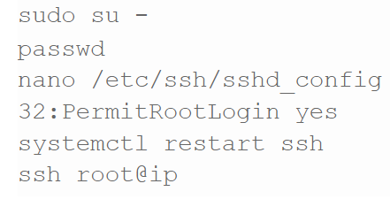
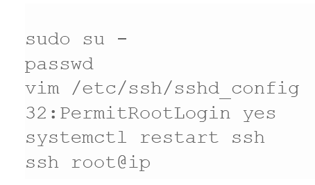

SSH
ZER DA, SSH-A?
SSH zerbitzariarekin konexio bat abian jartzeko erabilitako protokoloa da, erabiltzaileei beraien zerbitzariak aldatu eta kontrolatzeko ahalmena ematen diena konexio segurua erabiliz (informazioa enkriptatuta doa).
NOLA EGINGO DUGU
PSSH instalatu ahal izateko hurrengo pausuak jarraitu beharko ditugu:
1. Terminal grafikoa zabalduko dugu eta root bezala logeatuko gara eta terminalean hurrengoa idatziko dugu:
2. Root-a SSH erabiliz logeatzeko baimena emango diogu:
